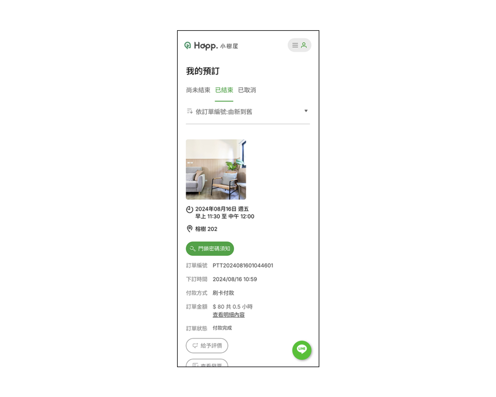
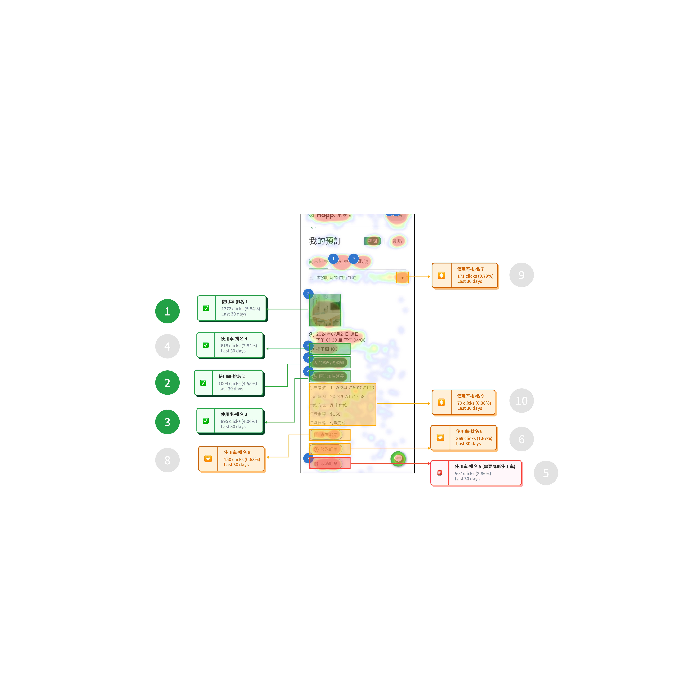
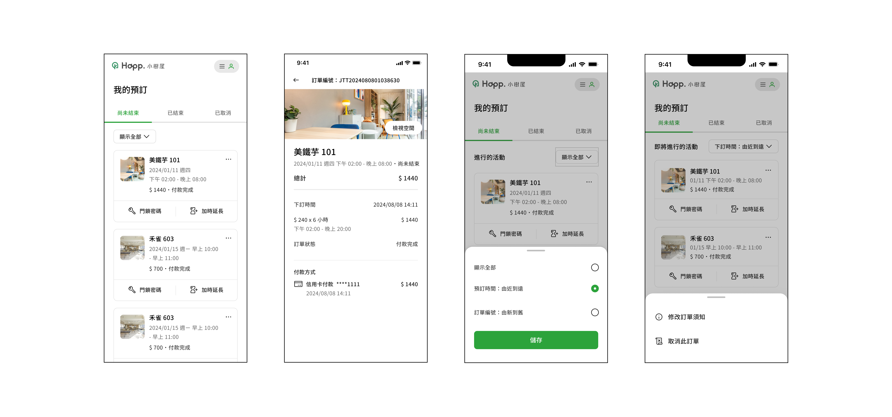
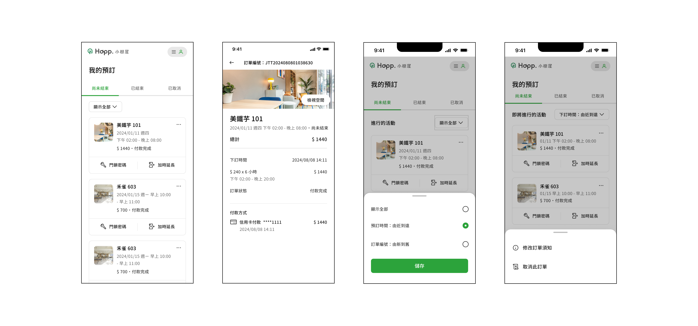
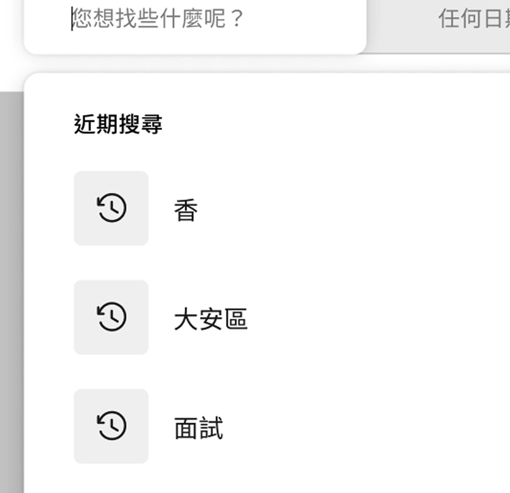
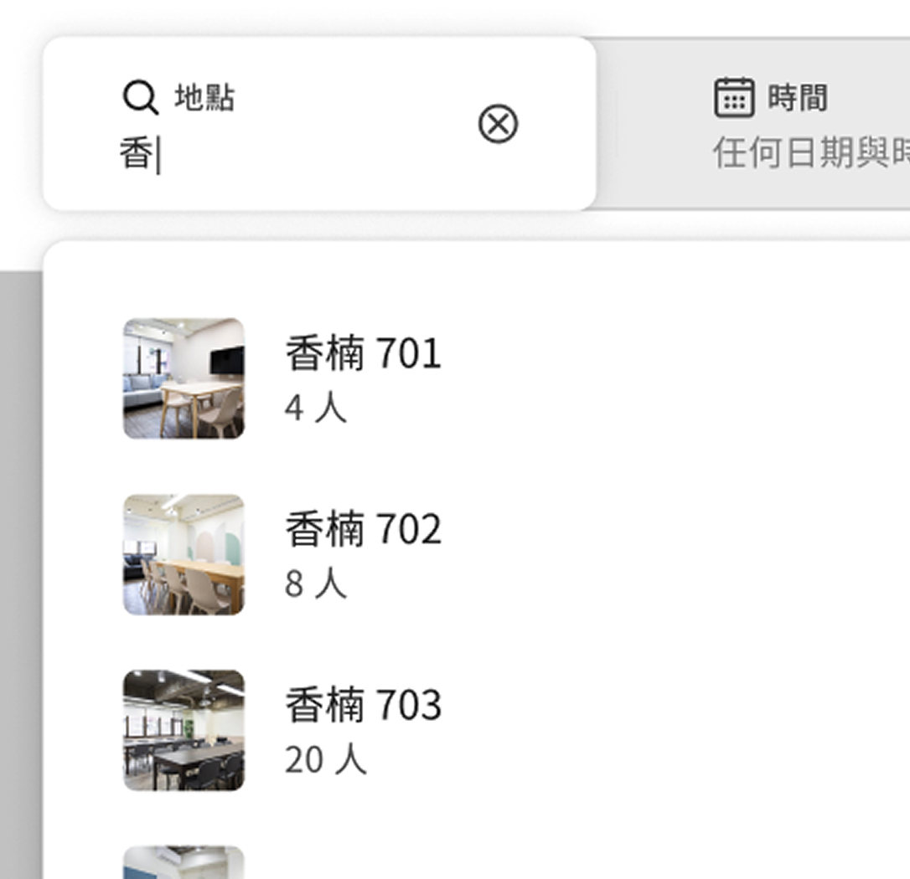
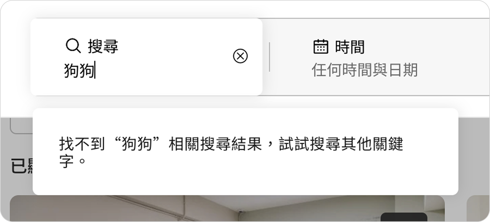

改善複雜資訊架構設計
主要擔任角色
UI Design
負責階段
結構層 → 框架層 → 表現層
合作的團隊角色
RD
花費時間
2～３週
關鍵問題
改善的核心除了遵循『易用性原則、無障礙設計、人機介面準則』之外，唯一不確定性的是預訂空間的用戶操作習慣，所以需要藉由數據觀察來驗證行為。
客戶成功部門同事，對於『人機介面準則』設計方式感到懷疑。
- 遵循了使用體驗原則後，如何驗證特別功能用戶的行為？
- 該用什麼數據方法來驗證用戶？
- 如何向提出疑問的人，提出解釋？
解決方法
- 使用 Clarity 觀察用戶的行為：熱點圖、操作行為
- 使用 UX 機構提出的循漸披露來進行設計
- 遵循人機介面準則設計
- 向提出疑問的人進行溝通

Clarity 數據觀察
為期 30 日透過介面上的熱點圖觀察用戶的使用狀況，來進行是否要進一步的刪減，來決定那些資訊需要先顯示給用戶。
- 照片：1272 Clicks (5.84%)
- 密碼＆加時功能：1004 Clicks (4.55%)
- 訂單資訊：895 Clicks (4.06%)
- 空間標題：618 Clicks (2.84%)

設計過程
用戶想要簡單，他們沒有時間足夠深入地學習大量功能，來選擇最適合他們需求的少數功能，所以運用了 Nielsen Norman Group - 尼爾森諾曼集團，
Progressive Disclosure 中指出的『循漸披露』
- 一開始，只向使用者顯示幾個最重要的選項
- 根據要求提供更多的專業選項，只有在用戶要求時才披露這些次要功能，大多數用戶可以繼續執行他們的任務，而不必擔心這種增加的複雜性。
人機介面準則 - Cards
將複雜的資訊設計成卡片樣式，卡片可以顯示單一主題的內容和動作。
- 使用卡片來顯示單一主題的內容和動作
- 卡片應該易於閱讀以獲取相關且可操作的資訊
- 文字和圖像等元素應以明確指示層次結構的方式放置在卡片上
資訊架構整理
依據重要優先順序排列，城市 > 行政區 > 其他，將次要的選項設計成模組化，使用者要選擇自己所在的區域時，就會看到預設的基本模組，並以 Tab + Chip 的 UI 結合，讓使用能對主要的城市切換不同選項，呈現不同的行政區
- Tab
- Chip
- 一致性、模組化
 

設計完成
響應式設計
為什麼會使用循漸披露設計呢？
根據『人機介面準則』搜尋功能需要包含幾項原則，當使用者在進行搜尋時，能輕鬆地使用產品功能，大幅減少使用者阻礙
- 搜尋紀錄
- 推薦項目
- 錯誤提示

保留使用者過往搜尋紀錄

搜尋關鍵詞時，推薦相對應的項目

搜尋不正確時，顯示錯誤資訊”